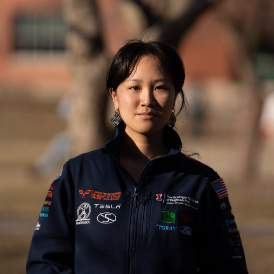
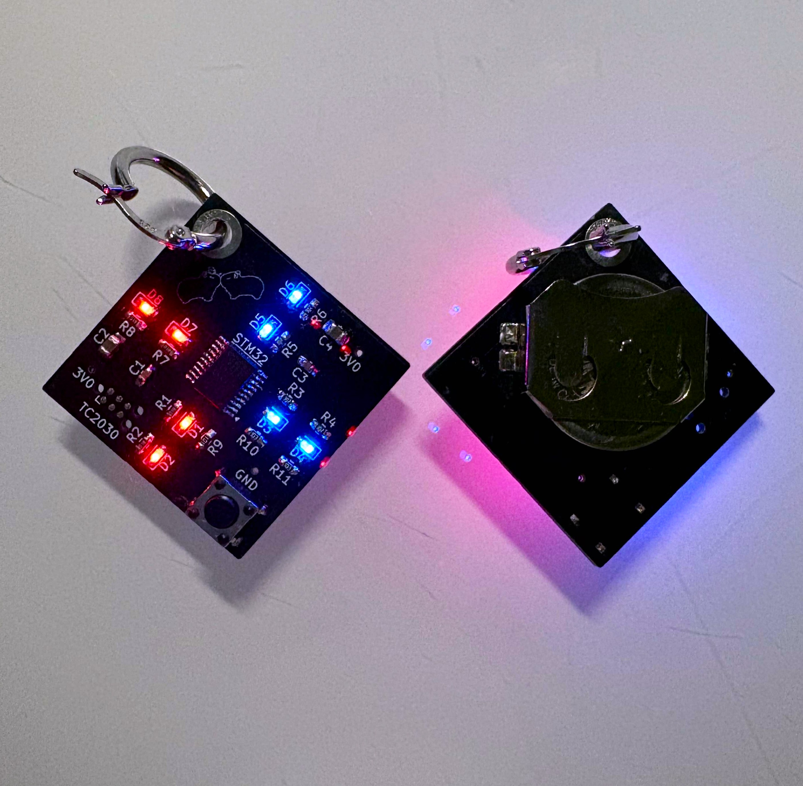
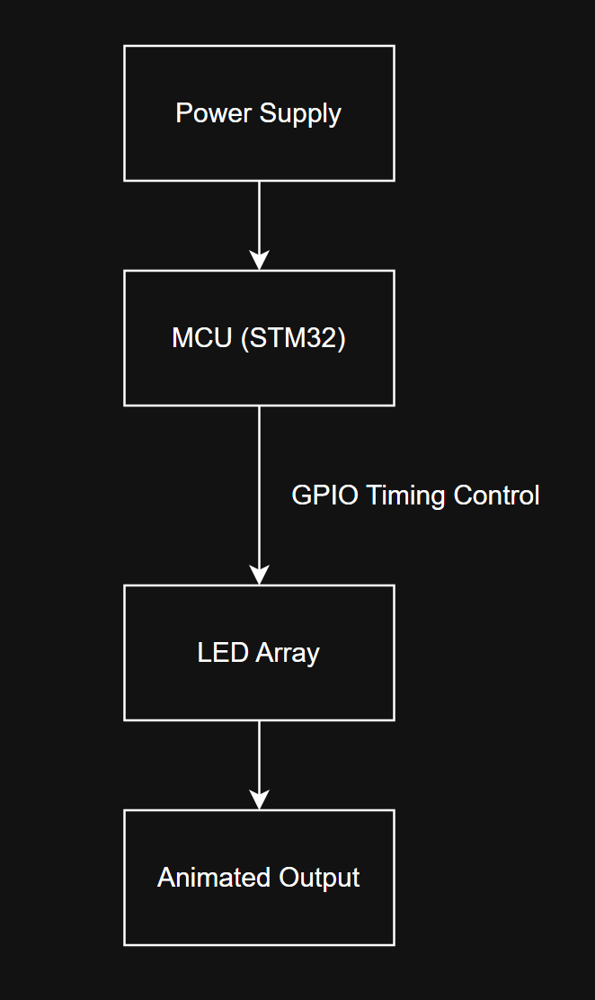
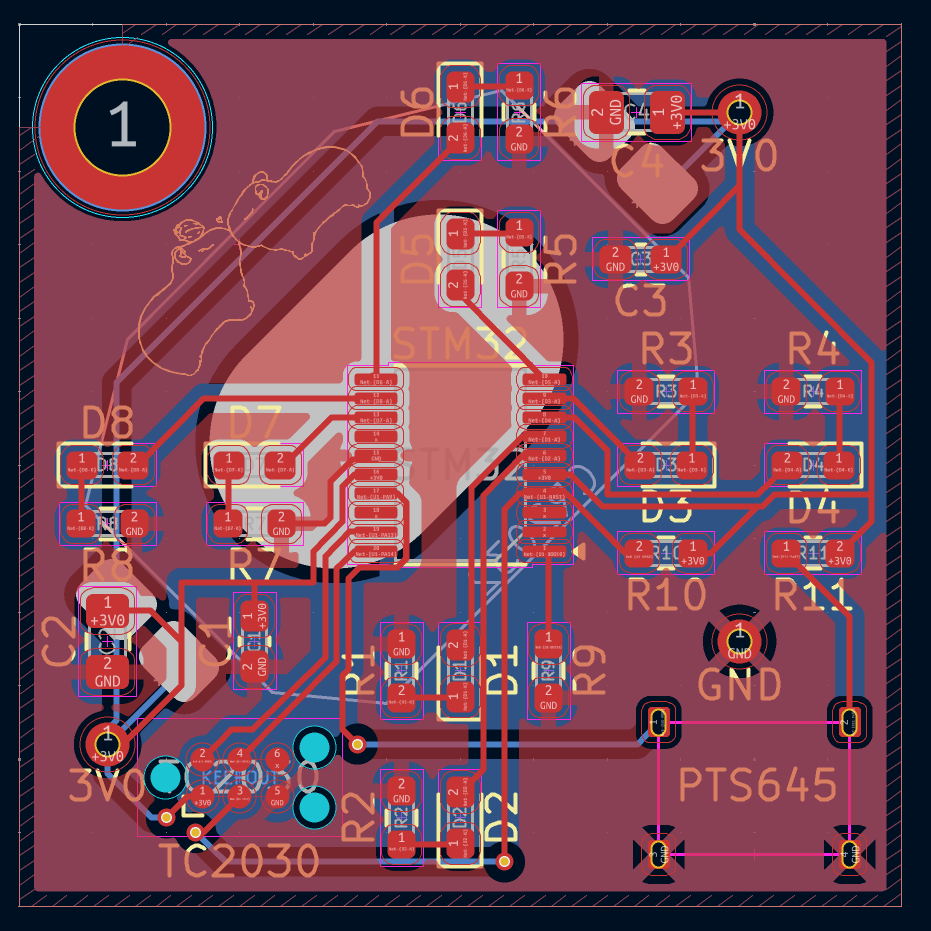
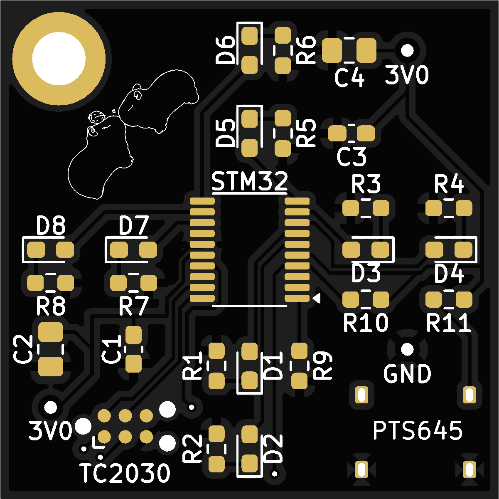
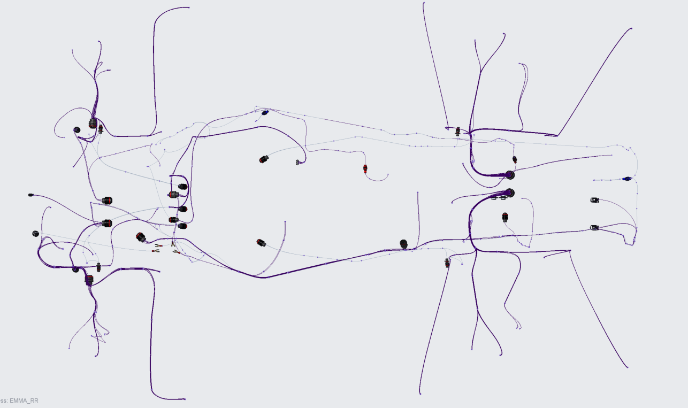
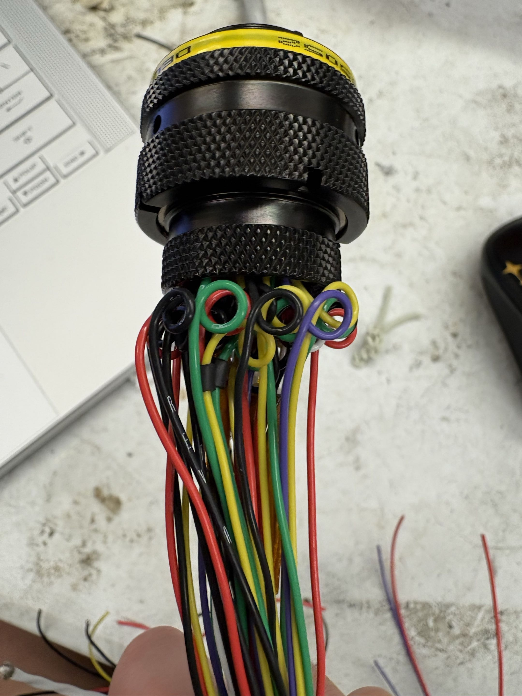
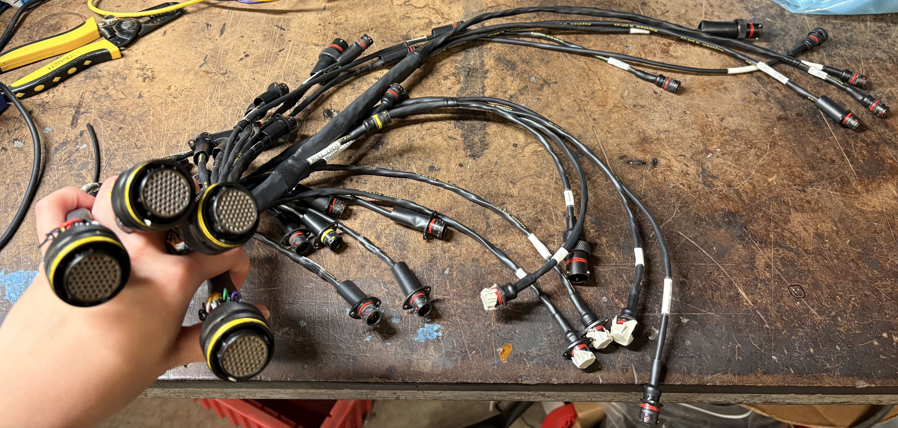
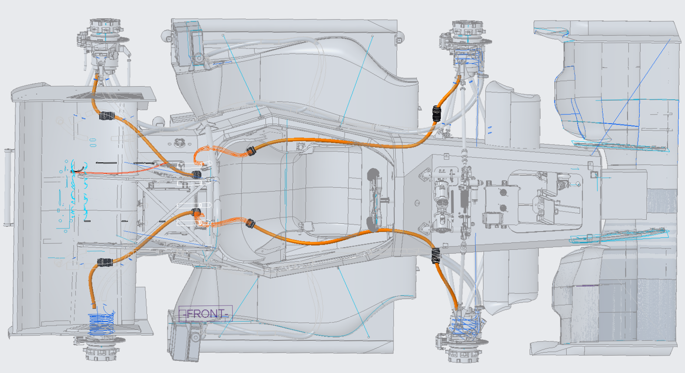

Focused on embedded systems, PCB design and assembly, hardware/software integration in electromechanical systems.
Projects
STM32 LED Earrings
STM32 • KiCad PCB • Embedded C • SMD Assembly • Wearable Hardware




STM32-based wearable LED earrings designed as a compact embedded systems project combining PCB design, firmware development, and physical assembly. The system features programmable LED animations driven by a custom STM32 firmware, implemented on a compact PCB designed in KiCad and assembled using SMD components. This project focuses on integrating low-power embedded control with wearable form factor constraints, including size, weight, and power limitations.
Illini Electric Motorsports (FSAE)
Electrical CAD • Wiring Harness Design • HV/LV Systems • Manufacturing • Electromechanical Integration




Spearheaded the design and fabrication of low- and high-voltage wiring harnesses for a Formula SAE electric vehicle. Responsibilities include CAD-based routing design, harness manufacturing, and integration planning while accounting for electrical safety, packaging limitations, and serviceability.